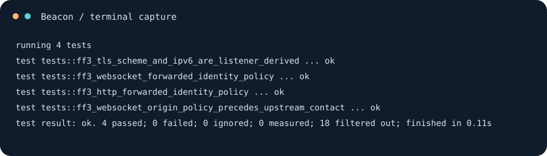
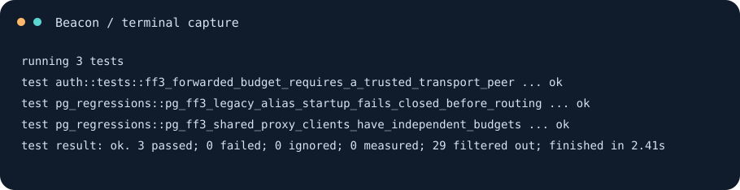

Hosts and paths
Reverse proxies, static roots, redirects and composite routes. WebSocket upgrades travel through the same site routing.
RUST AT THE EDGE · OPEN SOURCE
Sites are rows, not a config file waiting to go wrong. Beacon routes each host to its proxy, static files or redirect, with an administrative API backed by PostgreSQL.
Pre-1.0 software. Built for operators who want to understand their edge.
WHY BEACON EXISTS
Beacon grew out of a simple frustration: automated edits to a shared server configuration are hard to reason about. Give each site a row and a handler instead. Make the front door a program you can read, test and run yourself.
SMALL PARTS, EXPLICIT RESPONSIBILITIES
Reverse proxies, static roots, redirects and composite routes. WebSocket upgrades travel through the same site routing.
PostgreSQL stores site definitions. The administrative API and UI manage them; route snapshots publish after authoritative reads.
A provider interface manages DNS changes. Porkbun is implemented. TLS uses rustls; ACME DNS challenges use a separately installed lego client.
Local administration by default, bounded login attempts, forwarding trust lists and optional per-site WebSocket Origin checks.
Cloudflare is a provider skeleton. Raw TCP/UDP game forwarding is an optional build feature, off by default.
HOW IT WORKS
Public traffic matches a host, then a handler. Administration takes a separate path through authentication and the database. The full architecture lives in the README.
RECORDED, NOT MOCKED
These are terminal captures of actual sandbox regression output, rendered as SVG from committed text. The illustrations above are artwork; there is no simulated admin dashboard here.


BUILD YOUR OWN
Use Rust and Cargo 1.98.1. PostgreSQL is required at runtime. Provision the dependency cache for an offline build, then supply runtime configuration and a reachable database.
Read the configuration reference →git clone https://github.com/Gavinbombay/beacon
cd beacon
sh ./check-toolchain.sh
cargo build --locked --offline --release
# Set BEACON_CONFIG_JSON for your environment.
./target/release/beaconThe README covers configuration, the disposable database test fixture and the optional game_forward feature. Startup runs migrations before opening listeners.
OPERATE WITH CARE
Administration defaults to loopback and uses HTTP independently of public TLS. Protect remote management with authentication and encrypted ingress. Forwarded identity is replaced by default; only explicitly trusted proxies may preserve a chain. Configure allowed Origins for cookie-authenticated WebSocket services.
The release review uses an offline advisory snapshot. Yanked package status needs a refreshed registry index. See security and dependency notes. Report vulnerabilities through the repository's private reporting channel when enabled; keep sensitive details out of public issues.